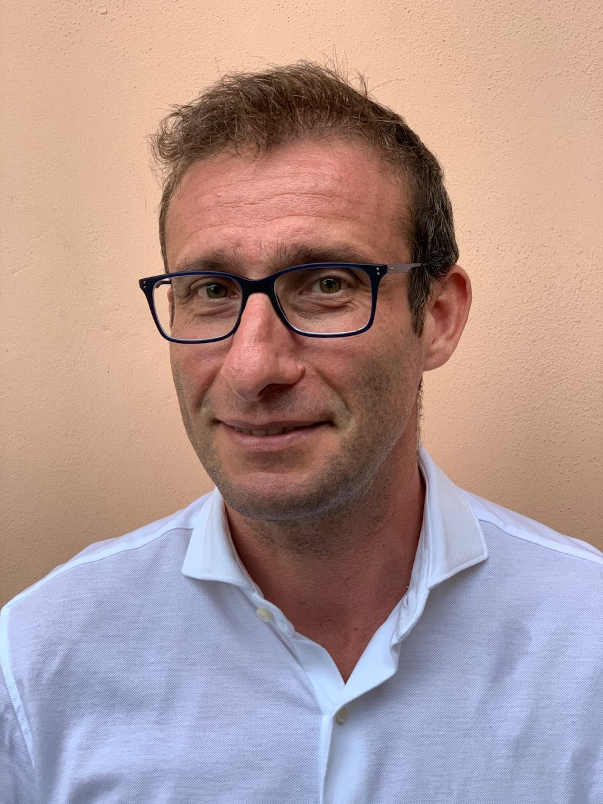

Where I work

None of these circles delivers alone, and neither do I. The value is in connecting them, inside a team, into something that runs.
Clinical genomics and epigenomics teams often have analysis that works in research, but isn't reproducible, validated, or ready to be audited and handed over. Closing that gap is what I do: taking sequencing and DNA-methylation work from research code to a computational system that runs in production and holds up under scrutiny. What I bring to it: 30 years engineering risk-critical, regulated systems, a PhD in Genomic Data Science, and first-author epigenetics research, put to work alongside a team of specialists (clinicians, wet-lab scientists, bioinformaticians), turning their combined competencies into a system that actually runs. The system works because the group does.
None of these circles delivers alone, and neither do I. The value is in connecting them, inside a team, into something that runs.
The workflow leans on undocumented assumptions, local environments and knowledge that lives only with its original author.
The scientific method is established; the implementation still needs reproducibility, dependency management, validation and documentation.
Clinicians, wet-lab scientists, bioinformaticians and engineers each contribute, but the computational system as a whole has no technical owner.
Reproducibility, traceability, quality control and audit-readiness for genomics and methylation systems.
Turning analysis code into modular, documented and containerised systems for WGS, NGS and EWAS.
Making a multi-disciplinary team deliver: architecture, validation strategy, mentoring and handover.
Adjunct lecturer at ITS Angelo Rizzoli for four years: descriptive statistics, statistical models and Python. The same coaching brought to your team: upskilling and handover so the work outlives the engagement.
I usually join teams that already hold the scientific expertise and need the technical capacity to make a computational system reliable and transferable. A typical engagement runs in four stages:
Map the current workflow, architecture, risks and constraints.
Build in what reproducibility, maintainability and operational reliability require.
Give technical direction across the scientific, computational and engineering domains.
Document the system and transfer the knowledge, so the team can run and maintain it without me.
For further detail, see the publications and projects pages.
“Applied whole-ism.” A. E. van Vogt, The Voyage of the Space Beagle, Simon & Schuster, 1950, p. 35
In van Vogt’s novel, Elliott Grosvenor is the only Nexialist aboard the Space Beagle: a department of one, whose specialism is connecting the others. For much of the voyage his reports go unanswered. He earns a hearing not by convincing anyone, but by threatening a board of inquiry; the director agrees to listen only because Grosvenor’s presence on the ship obliges him to weigh the opinion at all.
The interesting part isn’t that he turns out to be right. It’s that, before the demonstration, there was no way to tell him apart from someone who speaks loosely about everything. The chemist Kent’s skepticism is, a priori, fair.
I read my own work in that light. What I add to a team isn’t deeper genomics than the bioinformaticians or better bench judgement than the biologists: it’s propagating constraints across those domains until they resolve into one system that runs. I can read the interfaces between fields; I’m not the specialist inside any of them. Bench molecular biology and clinical interpretation, for two, are places where I defer to the people who own them. The connective role only proves itself after the fact, on a problem the separate specialisms don’t close on their own, and until then it’s fair to be skeptical of it.
Van Vogt makes the same point inside the book: the ship’s engineer, he notes, needed nexialism less than anyone aboard.
